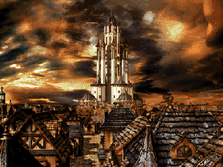

다운로드
받아서 바로 시작. 업데이트 방법도 아래에 있습니다.
로스트사가 v3.0 완결판
rm2k-lostsaga.zip · 약 43MB
Windows 의 로스트사가 접속.exe 로 실행하려면 zip 의 압축을 풉니다. 안에 rm2k-lostsaga 폴더가 있고, 이 폴더가 게임입니다. EasyRPG Player 는 zip 을 풀지 않고 그대로 열 수 있습니다. EasyRPG Player 로 실행하는 것을 권장합니다. 기기에 맞는 방법을 고르세요.
Windows
- zip 압축을 풀고
로스트사가 접속.exe를 실행합니다. - 그림이나 소리가 나오지 않으면 RPG Maker 2000 런타임 패키지(RTP)가 필요합니다. RTP 설치 파일을 받아 설치하세요.
- 이 방법은 RPG Maker 2000 의 한계로 레벨이 Lv50 까지, HP·MP·능력치가 999 까지입니다. 마스터 승급 캐릭터의 Lv51~55 성장은 아래 EasyRPG Player 로 실행할 때만 됩니다. 실행이 되지 않거나 느릴 때도 EasyRPG Player 를 쓰세요.
- 주의: 이 게임은 EasyRPG Player 기준으로 만들었습니다. Windows 의
로스트사가 접속.exe로 실행하면 마스터 승급 캐릭터의 능력치나 레벨업 성장이 다르게 나오는 등 문제가 생길 수 있습니다. 문제가 보이면 EasyRPG Player 로 실행해 주세요.
EasyRPG Player 로 실행하기 (권장)
EasyRPG Player 는 RPG Maker 2000 게임을 여러 기기에서 돌려 주는 무료 프로그램입니다. 설치한 뒤 위에서 받은 zip 이나 풀어 둔 게임 폴더를 열면 됩니다. 공식 다운로드 페이지
- Windows: 공식 페이지에서 받은 zip 의 실행 파일을 켜고 게임 zip 을 열거나, 풀어 둔 게임 폴더(
rm2k-lostsaga) 안에 실행 파일을 넣고 실행합니다. - Mac: 공식 페이지의 macOS 앱을 받거나 터미널에서
brew install easyrpg-player를 한 뒤, 게임 폴더(rm2k-lostsaga) 안에서easyrpg-player를 실행합니다. - Linux: Flatpak(
org.easyrpg.player) 이나 배포판 패키지로 설치하고 게임 폴더에서 실행합니다.
Android
- Google Play 의 EasyRPG Player 를 설치합니다.
- 받은 zip 은 풀지 않아도 됩니다. zip 파일 그대로, 또는 풀어서 나온
rm2k-lostsaga폴더를easyrpg/games/폴더 안으로 옮깁니다. 앱 첫 화면의 안내에 나오는 게임 폴더 위치를 따르세요. - EasyRPG Player 를 열고 목록에서 로스트사가를 눌러 시작합니다.
- 그림·소리가 비어 보이면 RTP 를
easyrpg/rtp/2000/에 넣어야 합니다.
화면에 십자키와 버튼이 나타나 터치로 조작할 수 있습니다. 기기와 앱 버전에 따라 폴더 위치와 메뉴 이름이 조금 다를 수 있습니다.
iPhone · iPad (iOS)
EasyRPG Player 는 앱스토어에 정식 앱이 없습니다. iOS 에서는 RetroArch 앱에 EasyRPG 코어를 받아 쓰는 방법이 있습니다.
- 앱스토어에서 RetroArch 를 설치하고, 코어 다운로드에서
EasyRPG를 받습니다. - 받은 zip 을 파일 앱의 RetroArch 폴더로 옮깁니다. 풀지 않아도 되고, 풀었다면
rm2k-lostsaga폴더를 옮깁니다. - RetroArch 에서 콘텐츠 불러오기로 zip 을 고릅니다. 폴더로 옮겼다면 폴더 안의
RPG_RT.ldb를 고릅니다.
iOS 는 설치 환경에 따라 동작이 달라 여기서는 확인하지 못했습니다. 안 되면 문의로 알려 주세요.
이미 하고 있다면 (업데이트)
- 위에서 새 zip 을 받습니다.
- zip 으로 실행하고 있다면 지금 쓰는 zip 을 새 zip 으로 바꿉니다. 폴더로 실행하고 있다면 새 zip 의 압축을 풀어 나온 파일을
rm2k-lostsaga폴더에 덮어씁니다. - 게임을 켜고 이어하기를 합니다.
세이브(Save01.lsd 같은 파일)는 zip 에 없어서 덮어써도 그대로 남습니다. 그래도 불안하면 Save 로 시작하는 파일만 따로 복사해 두세요. 이어하기가 안 되는 버전이 있을 수 있으니 릴리즈 노트도 한 번 봐 주세요. Android 는 세이브가 게임 폴더 밖에 있을 수 있어, 덮어쓰기 전에 위치를 확인하세요.